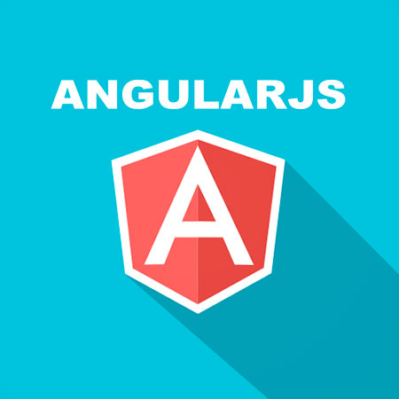

Языки программирования

- HTML
- Это гипертекстовый язык разметки (HyperText Markup Language), который используется для создания документов в Интернет(веб-страниц). При помощи HTML создается веб-страница, содержащая все нужные элементы. На HTML странице можно разместить простой текст, выделить его жирным или курсивом, вставить ссылку, таблицу, нумерованный или ненумерованный список, картинки, разбить текст на абзацы и разделы, задавать разделам заголовки. Также на HTML страницу можно вставить форму с текстовыми полями, кнопками, выбором вариантов из списка, checkbox'ами и radio элементами. В HTML5 в страницу можно встраивать видео и аудио файлы, рисовать при помощи canvas, делать простые анимации при помощи новых тегов(marquee).

- CSS
- Это формальный язык описания внешнего вида документа, написанного с использованием языка разметки.CSS используется создателями веб-страниц для задания цветов, шрифтов, расположения отдельных блоков и других аспектов представления внешнего вида этих веб-страниц. Основной целью разработки CSS являлось разделение описания логической структуры веб-страницы (которое производится с помощью HTML или других языков разметки) от описания внешнего вида этой веб-страницы (которое теперь производится с помощью формального языка CSS). Такое разделение может увеличить доступность документа, предоставить большую гибкость и возможность управления его представлением, а также уменьшить сложность и повторяемость в структурном содержимом. Кроме того, CSS позволяет представлять один и тот же документ в различных стилях или методах вывода, таких как экранное представление, печатное представление, чтение голосом (специальным голосовым браузером или программой чтения с экрана), или при выводе устройствами, использующими шрифт Брайля.

- JavaScript
- Это прототипно-ориентированный сценарный язык программирования.Наиболее широкое применение находит в браузерах как язык сценариев для придания интерактивности веб-страницам.JavaScript используется в клиентской части веб-приложений: клиент-серверных программ, в котором клиентом является браузер, а сервером — веб-сервер, имеющих распределённую между сервером и клиентом логику. Обмен информацией в веб-приложениях происходит по сети. Одним из преимуществ такого подхода является тот факт, что клиенты не зависят от конкретной операционной системы пользователя, поэтому веб-приложения, написанные на этом языке, являются кроссплатформенными сервисами.
Хочу изучить следующие языки:

- PHP
- Это скриптовый язык общего назначения, применяемый для разработки веб-приложений. В настоящее время поддерживается подавляющим большинством хостинг-провайдеров и является одним из лидеров среди языков, применяющихся для создания динамических веб-сайтов. Говоря проще, PHP это язык программирования, специально разработанный для написания web-приложений (сценариев), исполняющихся на Web-сервере.Аббревиатура PHP означает “Hypertext Preprocessor (Препроцессор Гипертекста)". Синтаксис языка берет начало из C, Java и Perl.

- SQL
- Это формальный непроцедурный язык программирования, применяемый для создания, модификации и управления данными в произвольной реляционной базе данных, управляемой соответствующей системой управления базами данных (СУБД). SQL основывается на исчислении кортежей.

- Java
- Это объектно-ориентированный язык программирования, разработанный компанией Sun Microsystems (в последующем приобретённой компанией Oracle). Java используется для написания клиентских приложений и серверного программного обеспечения.
А также фреймворки и библиотеки :

- Bootstrap
- Это свободный набор инструментов для создания сайтов и веб-приложений. Включает в себя HTML и CSS шаблоны оформления для типографики, веб-форм, кнопок, меток, блоков навигации и прочих компонентов веб-интерфейса, включая JavaScript-расширения. Bootstrap использует самые современные наработки в области CSS и HTML

- Angular JS
- Это JavaScript-фреймворк с открытым исходным кодом. Предназначен для разработки одностраничных приложений. Его цель — расширение браузерных приложений на основе MVC шаблона, а также упрощение тестирования и разработки.
- jQuery
- Это библиотека JavaScript, фокусирующаяся на взаимодействии JavaScript и HTML. Библиотека jQuery помогает легко получать доступ к любому элементу DOM, обращаться к атрибутам и содержимому элементов DOM, манипулировать ими.